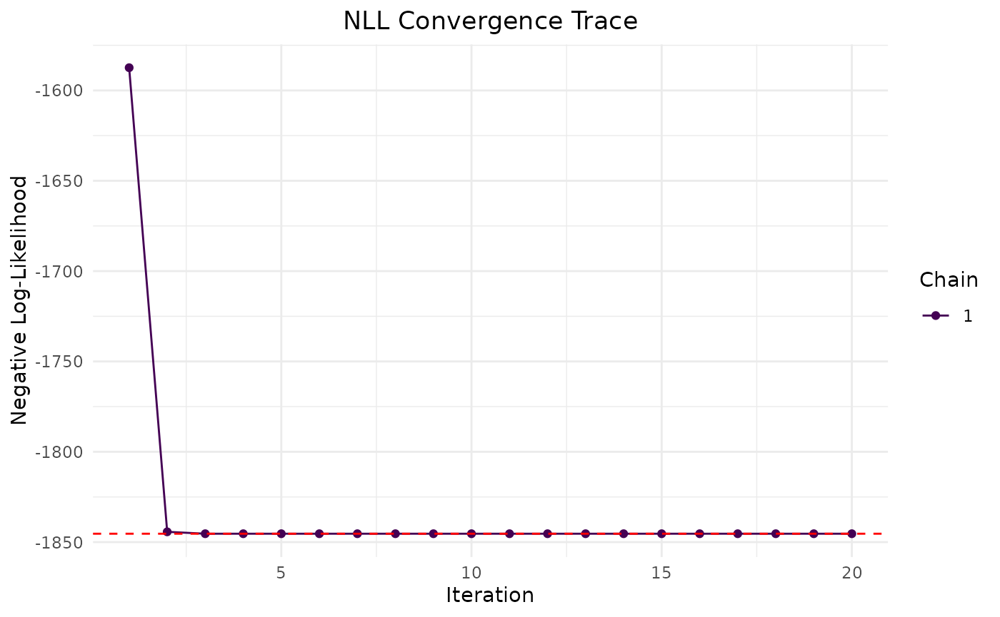
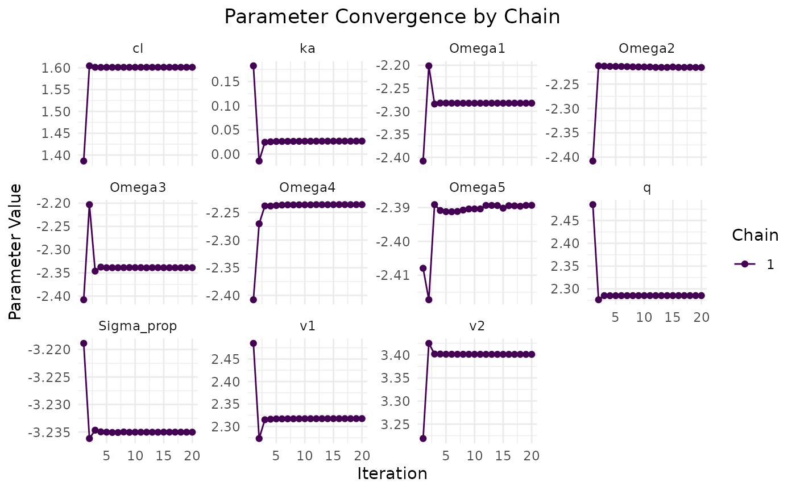
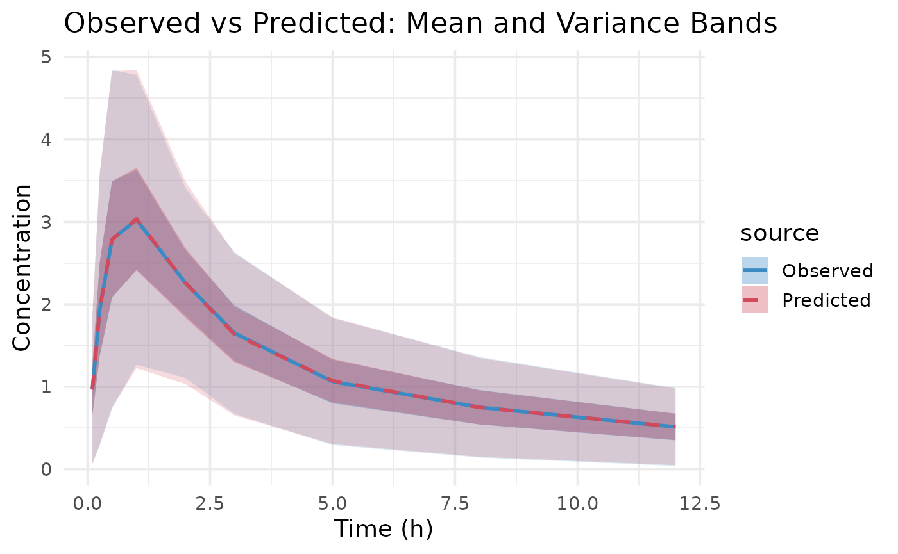
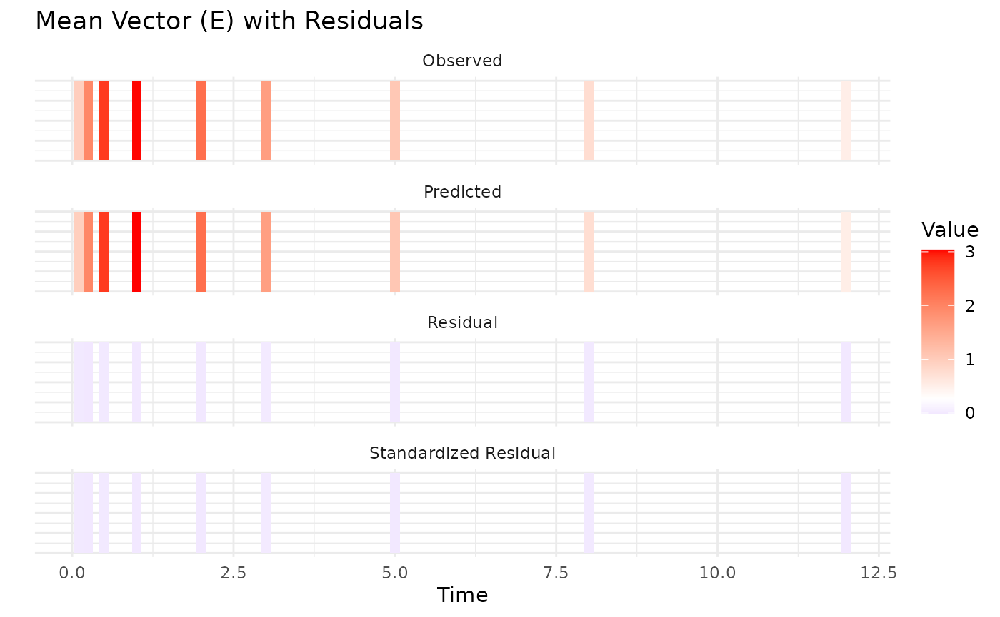

Introduction to Aggregate Data Modeling with admr
This vignette provides a comprehensive introduction to using the
admr package for aggregate data modeling in population
pharmacokinetics. We’ll cover the basic concepts, data preparation,
model specification, and make a link to more advanced features.
What is Aggregate Data Modeling?
Aggregate data modeling is a new approach in pharmacometrics that allows you to work with summary-level data instead of individual-level observations. This is particularly useful when:
- Individual-level data is not available (e.g., from published literature)
- You need to combine data from multiple studies
- You want to perform meta-analyses
- You’re working with simulated data and want to reduce computational burden
The admr package implements the Iterative Reweighting
Monte Carlo (IRMC) algorithm, which efficiently fits models to aggregate
data by iteratively updating parameter estimates using weighted
importance sampling. This is more efficient than traditional Monte Carlo
methods.
Understanding the Data Format
The admr package works with two types of data
formats:
- Raw Data: Individual-level observations in a wide or long format.
- Aggregate Data: Summary statistics (mean and covariance) computed from raw data.
- Aggregate Data with only means and variance: Mean and variance for each time point (no covariances).
The vignette Variance-only based modelling provides more details on the third option.
Let’s look at the examplomycin dataset, which we’ll use throughout this vignette:
## ID TIME DV AMT EVID CMT
## 1 460 0.00 0.000 100 101 1
## 2 460 0.10 0.752 0 0 2
## 3 460 0.25 1.932 0 0 2
## 4 460 0.50 3.694 0 0 2
## 5 460 1.00 3.479 0 0 2
## 6 460 2.00 4.003 0 0 2## Number of subjects: 500## Number of time points: 10## Time points: 0, 0.1, 0.25, 0.5, 1, 2, 3, 5, 8, 12Data Preparation
Converting Raw Data to Aggregate Format
The first step is to convert our simulated raw data into aggregate
format. In real-world scenarios, you might have to extract summary
statistics from published studies, depending on the available
information. But for this example, we’ll compute the mean and covariance
from the examplomycin dataset. Here’s how to do it:
# Convert to wide format
examplomycin_wide <- examplomycin %>%
filter(EVID != 101) %>% # Remove dosing events
dplyr::select(ID, TIME, DV) %>% # Select relevant columns
pivot_wider(names_from = TIME, values_from = DV) %>% # Convert to wide format
dplyr::select(-c(1)) # Remove ID column
# Create aggregated data
examplomycin_aggregated <- examplomycin_wide %>%
admr::meancov() # Compute mean and covariance
# View the structure of aggregated data
str(examplomycin_aggregated)## List of 2
## $ E: Named num [1:9] 0.966 1.939 2.788 3.025 2.258 ...
## ..- attr(*, "names")= chr [1:9] "0.1" "0.25" "0.5" "1" ...
## $ V: num [1:9, 1:9] 0.2103 0.3078 0.3486 0.2026 0.0224 ...
## ..- attr(*, "dimnames")=List of 2
## .. ..$ : chr [1:9] "0.1" "0.25" "0.5" "1" ...
## .. ..$ : chr [1:9] "0.1" "0.25" "0.5" "1" ...This aggregated data now contains the mean concentrations and the
covariance matrix at each time point. If you have raw data, you can use
the meancov function to compute these statistics. However,
when extracting data from literature, you may need to manually input the
means and covariances based on the reported values. If only standard
deviations are available, you can construct a diagonal covariance
matrix.
Visualizing the Data
Before fitting the model, it’s helpful to visualize the aggregate data:
# Boxplot to visualize variability
ggplot(examplomycin, aes(x = TIME, y = DV, group = TIME)) +
geom_boxplot(aes(group = TIME), width = 0.2) +
labs(
title = "Concentration Variability at Each Time Point",
x = "Time (hours)",
y = "Concentration (mg/L)"
) +
theme_minimal() This plot doesn’t show the covariance between time points, but it gives
an idea of the variability in concentrations at each time point.
This plot doesn’t show the covariance between time points, but it gives
an idea of the variability in concentrations at each time point.
Model Specification
Defining the Pharmacokinetic Model
We’ll use a two-compartment model with first-order absorption. There are two ways to specify this:
- Using differential equations:
rxModel <- rxode2({
# Parameters
ke = cl / v1 # Elimination rate constant
k12 = q / v1 # Rate constant for central to peripheral transfer
k21 = q / v2 # Rate constant for peripheral to central transfer
# Differential equations
d/dt(depot) = -ka * depot
d/dt(central) = ka * depot - ke * central - k12 * central + k21 * peripheral
d/dt(peripheral) = k12 * central - k21 * peripheral
# Concentration in central compartment
cp = central / v1
})- Using the solved model approach (simpler):
# Define RxODE model
rxModel <- function(){
model({
cp = linCmt(
cl, # Clearance
v1, # Volume of central compartment
v2, # Volume of peripheral compartment
q, # Inter-compartmental clearance
ka # Absorption rate constant
)})
}
rxModel <- rxode2(rxModel)
rxModel <- rxModel$simulationModelThese models are identical in terms of their pharmacokinetic
behavior. The second approach is the solved model, which is faster in
execution. In this stage of package development, it is important the
parameters are in the same order as specified in the
genopts function later.
Creating the Prediction Function
The prediction function is crucial for the admr package.
It: - Constructs the event table for dosing and sampling - Solves the
RxODE model - Returns predicted concentrations in the required
format
rxode2::rxSetSilentErr(1) # does not print iteration messages in vignette## [1] TRUE
predder <- function(time, theta_i, dose = 100) {
n_individuals <- nrow(theta_i)
if (is.null(n_individuals)) {
n_individuals <- 1
}
# Create event table
ev <- eventTable(amount.units="mg", time.units="hours")
ev$add.dosing(dose = dose, nbr.doses = 1, start.time = 0)
ev$add.sampling(time)
# Solve model
out <- rxSolve(rxModel, params = theta_i, events = ev, cores = 0)
# Format output
cp_matrix <- matrix(out$cp, nrow = n_individuals, ncol = length(time),
byrow = TRUE)
return(cp_matrix)
}This is the function that admr will use to generate
predictions based on the model parameters. The user can specify the dose
amount, number of doses and the dosing interval in the
eventTable function. Furthermore, the rxSolve
function can be parallelized by setting the cores argument
to a value greater than 1, which can significantly speed up computations
for large datasets or complex models.
Model Fitting
Setting Up Model Options
The genopts function creates an options object that
controls the model fitting process:
opts <- genopts(
time = c(.1, .25, .5, 1, 2, 3, 5, 8, 12), # Observation times
p = list(
beta = c(cl = 5, v1 = 10, v2 = 30, q = 10, ka = 1), # Population parameters
Omega = matrix(c(0.09, 0, 0, 0, 0,
0, 0.09, 0, 0, 0,
0, 0, 0.09, 0, 0,
0, 0, 0, 0.09, 0,
0, 0, 0, 0, 0.09), nrow = 5, ncol = 5), # Random effects
Sigma_prop = 0.04 # Proportional error
),
nsim = 10000, # Number of Monte Carlo samples
n = 500, # Number of individuals
fo_appr = FALSE, # Disable first-order approximation used in lower nsim
omega_expansion = 1, # Omega expansion factor
f = predder # Prediction function we defined earlier
)In this opts object: - time: Specifies the
observation times - p: Contains the initial estimates for
population parameters (beta), between-subject variability
(Omega), and residual error (Sigma_prop) -
nsim: Number of Monte Carlo samples to use in the fitting
process - n: Number of individuals to simulate -
fo_appr: Whether to use a first-order approximation, only
recommended for very low nsim -
omega_expansion: A factor to expand the covariance matrix
during estimation, which can help with convergence - f: The
prediction function we defined earlier
Fitting the Model
The fitMC function fits the model using a traditional MC
algorithm:
fit.admrMC <- admr::fitMC(
opts = opts,
obs = examplomycin_aggregated,
chains = 1, # Number of chains
maxiter = 2000 # Maximum iterations
)## Iteration: 50 - NLL: -1842.402
## Iteration: 100 - NLL: -1844.962
## Iteration: 150 - NLL: -1845.108
## Iteration: 200 - NLL: -1845.15
## Iteration: 250 - NLL: -1845.253
## Iteration: 300 - NLL: -1845.312
## Iteration: 350 - NLL: -1845.335
## Iteration: 400 - NLL: -1845.341
## Iteration: 450 - NLL: -1845.344
## Iteration: 500 - NLL: -1845.346
## Iteration: 550 - NLL: -1845.352
## Iteration: 600 - NLL: -1845.353
## Iteration: 650 - NLL: -1845.355
## Iteration: 700 - NLL: -1845.356
## Iteration: 750 - NLL: -1845.357
## Iteration: 800 - NLL: -1845.357
##
## Chain 1 Complete: Final NLL = -1845.357, Time Elapsed = 134.97 seconds
## The fitIRMC function fits the model using the IRMC
algorithm, which is more efficient for aggregate data:
fit.admr <- admr::fitIRMC(
opts = opts,
obs = examplomycin_aggregated,
chains = 1, # Number of chains
maxiter = 200 # Maximum iterations
)## Chain 1:
## Iter | NLL and Parameters (11 values)
## --------------------------------------------------------------------------------
## 1: -1839.520 1.609 2.303 3.401 2.303 0.000 -2.408 -2.408 -2.408 -2.408 -2.408 -3.219
##
## ### Wide Search Phase ###
## 2: -1845.312 1.601 2.323 3.399 2.285 0.032 -2.274 -2.186 -2.325 -2.213 -2.412 -3.235
## 3: -1845.355 1.601 2.317 3.401 2.285 0.027 -2.283 -2.217 -2.339 -2.238 -2.388 -3.235
## 4: -1845.355 1.601 2.317 3.401 2.285 0.027 -2.282 -2.216 -2.340 -2.237 -2.388 -3.235
## 5: -1845.354 1.601 2.317 3.401 2.285 0.027 -2.282 -2.216 -2.340 -2.236 -2.389 -3.235
## 6: -1845.354 1.601 2.317 3.401 2.285 0.027 -2.282 -2.216 -2.339 -2.236 -2.389 -3.235
## 7: -1845.354 1.601 2.317 3.401 2.285 0.027 -2.282 -2.216 -2.339 -2.236 -2.389 -3.235
## Phase Wide Search Phase converged at iteration 7.
##
## ### Focussed Search Phase ###
## 8: -1845.355 1.601 2.317 3.401 2.285 0.026 -2.282 -2.217 -2.338 -2.237 -2.388 -3.235
## 9: -1845.354 1.601 2.318 3.401 2.285 0.027 -2.282 -2.216 -2.339 -2.236 -2.389 -3.235
## 10: -1845.354 1.601 2.318 3.401 2.285 0.027 -2.282 -2.216 -2.339 -2.236 -2.389 -3.235
## 11: -1845.354 1.601 2.318 3.401 2.285 0.027 -2.282 -2.216 -2.339 -2.236 -2.389 -3.235
## Phase Focussed Search Phase converged at iteration 11.
##
## ### Fine-Tuning Phase ###
## 12: -1845.354 1.601 2.318 3.401 2.285 0.027 -2.282 -2.216 -2.339 -2.236 -2.390 -3.235
## 13: -1845.354 1.601 2.318 3.401 2.285 0.027 -2.282 -2.216 -2.339 -2.236 -2.390 -3.235
## 14: -1845.354 1.601 2.318 3.401 2.285 0.027 -2.282 -2.216 -2.339 -2.236 -2.390 -3.235
## Phase Fine-Tuning Phase converged at iteration 14.
##
## ### Precision Phase ###
## 15: -1845.354 1.601 2.318 3.401 2.285 0.027 -2.282 -2.216 -2.339 -2.236 -2.390 -3.235
## 16: -1845.354 1.601 2.318 3.401 2.285 0.027 -2.282 -2.216 -2.339 -2.236 -2.389 -3.235
## 17: -1845.354 1.601 2.318 3.401 2.285 0.027 -2.282 -2.216 -2.339 -2.236 -2.389 -3.235
## Phase Precision Phase converged at iteration 17.
##
## Chain 1 Complete: Final NLL = -1845.355, Time Elapsed = 17.77 seconds
## Model Diagnostics
Basic Diagnostics
The print method provides a summary of the model
fit:
print(fit.admr)## -- FitIRMC Summary --
##
## -- Objective Function and Information Criteria --
## Log-likelihood: -1845.3550
## AIC: 3701.71
## BIC: 3759.07
## Condition#(Cov): 152.22
## Condition#(Cor): 216.91
##
## -- Timing Information --
## Best Chain: 17.7704 seconds
## All Chains: 17.7730 seconds
## Covariance: 28.6434 seconds
## Elapsed: 46.42 seconds
##
## -- Population Parameters --
## # A tibble: 6 × 6
## Parameter Est. SE `%RSE` `Back-transformed(95%CI)` `BSV(CV%)`
## <chr> <dbl> <dbl> <dbl> <chr> <dbl>
## 1 cl 1.60 0.0152 0.950 4.96 (4.81, 5.11) 31.9
## 2 v1 2.32 0.0865 3.73 10.15 (8.57, 12.02) 33.0
## 3 v2 3.40 0.0400 1.18 30.00 (27.74, 32.45) 31.1
## 4 q 2.29 0.0212 0.928 9.83 (9.43, 10.24) 32.7
## 5 ka 0.0265 0.0817 308. 1.03 (0.87, 1.21) 30.3
## 6 Residual Error 0.0394 NA NA 0.0394 NA
##
## -- Iteration Diagnostics --
## Iter | NLL and Parameters
## --------------------------------------------------------------------------------
## 1: -1839.520 1.609 2.303 3.401 2.303 0.000 -2.408 -2.408 -2.408 -2.408 -2.408 -3.219
## 2: -1845.312 1.601 2.323 3.399 2.285 0.032 -2.274 -2.186 -2.325 -2.213 -2.412 -3.235
## 3: -1845.355 1.601 2.317 3.401 2.285 0.027 -2.283 -2.217 -2.339 -2.238 -2.388 -3.235
## 4: -1845.355 1.601 2.317 3.401 2.285 0.027 -2.282 -2.216 -2.340 -2.237 -2.388 -3.235
## 5: -1845.354 1.601 2.317 3.401 2.285 0.027 -2.282 -2.216 -2.340 -2.236 -2.389 -3.235
## ... (omitted iterations) ...
## 13: -1845.354 1.601 2.318 3.401 2.285 0.027 -2.282 -2.216 -2.339 -2.236 -2.390 -3.235
## 14: -1845.354 1.601 2.318 3.401 2.285 0.027 -2.282 -2.216 -2.339 -2.236 -2.390 -3.235
## 15: -1845.354 1.601 2.318 3.401 2.285 0.027 -2.282 -2.216 -2.339 -2.236 -2.390 -3.235
## 16: -1845.354 1.601 2.318 3.401 2.285 0.027 -2.282 -2.216 -2.339 -2.236 -2.389 -3.235
## 17: -1845.354 1.601 2.318 3.401 2.285 0.027 -2.282 -2.216 -2.339 -2.236 -2.389 -3.235Convergence Assessment
The plot method visualizes the convergence of the model
fit:
plot(fit.admr) The Observed vs Predicted plot shows how well the model predictions
align with the observed aggregate data. These show a good fit to the
data, with means and variability well captured. However, let’s examine
the parameter estimates for a more detailed assessment. The predicted
means and variance-covariance show good resemblance to the observed
data, indicating that the model is capturing the underlying
pharmacokinetic behavior effectively.
The Observed vs Predicted plot shows how well the model predictions
align with the observed aggregate data. These show a good fit to the
data, with means and variability well captured. However, let’s examine
the parameter estimates for a more detailed assessment. The predicted
means and variance-covariance show good resemblance to the observed
data, indicating that the model is capturing the underlying
pharmacokinetic behavior effectively.
Parameter Estimates
Let’s examine the parameter estimates:
# Extract parameter estimates
params <- fit.admr$transformed_params
cat("Final parameter estimates:\n")## Final parameter estimates:
print(params)## $beta
## cl v1 v2 q ka
## 4.958917 10.147466 29.999156 9.826715 1.026882
##
## $Omega
## [,1] [,2] [,3] [,4] [,5]
## [1,] 0.1020163 0.000000 0.00000000 0.0000000 0.00000000
## [2,] 0.0000000 0.108904 0.00000000 0.0000000 0.00000000
## [3,] 0.0000000 0.000000 0.09641712 0.0000000 0.00000000
## [4,] 0.0000000 0.000000 0.00000000 0.1066628 0.00000000
## [5,] 0.0000000 0.000000 0.00000000 0.0000000 0.09182798
##
## $Sigma_prop
## [1] 0.03935998
params.true <- list(
beta = c(cl = 5, v1 = 10, v2 = 30, q = 10, ka = 1),
Omega = diag(rep(0.09, 5)),
Sigma_prop = 0.04
)
cat("True parameter values:\n")## True parameter values:
print(params.true)## $beta
## cl v1 v2 q ka
## 5 10 30 10 1
##
## $Omega
## [,1] [,2] [,3] [,4] [,5]
## [1,] 0.09 0.00 0.00 0.00 0.00
## [2,] 0.00 0.09 0.00 0.00 0.00
## [3,] 0.00 0.00 0.09 0.00 0.00
## [4,] 0.00 0.00 0.00 0.09 0.00
## [5,] 0.00 0.00 0.00 0.00 0.09
##
## $Sigma_prop
## [1] 0.04For this dataset, the estimated parameters are close to the true values used in the simulation, indicating a successful model fit using only summary statistics. However, small discrepancies can occur due to the stochastic nature of the Monte Carlo sampling and the limited number of samples. Therefore, we’ll assess the overall dynamics of the model through a dosing simulation.
Dosing plot with Confidence Intervals for true vs estimated parameters
First, let’s specify two models: one with the true parameters and
another with the estimated parameters from the fit.admr
object.
params.true <- list(
beta = c(cl = 5, v1 = 10, v2 = 30, q = 10, ka = 1),
Omega = diag(rep(0.09, 5)),
Sigma_prop = 0.04
)
params <- fit.admr$transformed_params
rxModel_true <- function(){
ini({
cl <- params.true$beta["cl"] # Clearance
v1 <- params.true$beta["v1"] # Volume of central compartment
v2 <- params.true$beta["v2"] # Volume of peripheral compartment
q <- params.true$beta["q"] # Inter-compartmental clearance
ka <- params.true$beta["ka"] # Absorption rate constant
eta_cl ~ params.true$Omega[1,1]
eta_v1 ~ params.true$Omega[2,2]
eta_v2 ~ params.true$Omega[3,3]
eta_q ~ params.true$Omega[4,4]
eta_ka ~ params.true$Omega[5,5]
})
model({
cl <- cl * exp(eta_cl)
v1 <- v1 * exp(eta_v1)
v2 <- v2 * exp(eta_v2)
q <- q * exp(eta_q)
ka <- ka * exp(eta_ka)
cp = linCmt(cl, v1, v2, q, ka)
})
}
rxModel_covar <- function(){
ini({
cl <- params$beta["cl"] # Clearance
v1 <- params$beta["v1"] # Volume of central compartment
v2 <- params$beta["v2"] # Volume of peripheral compartment
q <- params$beta["q"] # Inter-compartmental clearance
ka <- params$beta["ka"] # Absorption rate constant
eta_cl ~ params$Omega[1,1]
eta_v1 ~ params$Omega[2,2]
eta_v2 ~ params$Omega[3,3]
eta_q ~ params$Omega[4,4]
eta_ka ~ params$Omega[5,5]
})
model({
cl <- cl * exp(eta_cl)
v1 <- v1 * exp(eta_v1)
v2 <- v2 * exp(eta_v2)
q <- q * exp(eta_q)
ka <- ka * exp(eta_ka)
cp = linCmt(cl, v1, v2, q, ka)
})
}
rxModel_true <- rxode2(rxModel_true())
rxModel_true <- rxModel_true$simulationModel## using C compiler: ‘gcc (Ubuntu 13.3.0-6ubuntu2~24.04) 13.3.0’
rxModel_covar <- rxode2(rxModel_covar())
rxModel_covar <- rxModel_covar$simulationModelNow, let’s simulate both models over a dosing regimen and plot the results with confidence intervals:
time_points <- seq(0, 12, by = 0.1) # Dense time points for smooth curves
ev <- eventTable(amount.units="mg", time.units="hours")
ev$add.dosing(dose = 100, nbr.doses = 2, dosing.interval = 6)
ev$add.sampling(time_points)
sim_true <- rxSolve(rxModel_true, events = ev, cores = 0, nSub = 10000)
sim_covar <- rxSolve(rxModel_covar, events = ev, cores = 0, nSub = 10000)
# Combine the confidence intervals with a label for the model
ci_true <- as.data.frame(confint(sim_true, "cp", level=0.95)) %>%
mutate(Model = "True parameters")## summarizing data...done
ci_covar <- as.data.frame(confint(sim_covar, "cp", level=0.95)) %>%
mutate(Model = "Estimated model")## summarizing data...done
# Bind them together
ci_all <- bind_rows(ci_true, ci_covar) %>%
mutate(
p1 = as.numeric(as.character(p1)),
Percentile = factor(Percentile, levels = unique(Percentile[order(p1)]))
)
# Plot both models
ggplot(ci_all, aes(x = time, group = interaction(Model, Percentile))) +
geom_ribbon(aes(ymin = p2.5, ymax = p97.5, fill = Model),
alpha = 0.2, colour = NA) +
geom_line(aes(y = p50, colour = Model), size = 0.8) +
labs(
title = "Central Concentration Simulations",
x = "Time",
y = "Central Concentration (mg/L)"
) +
theme_bw(base_size = 14) +
scale_colour_manual(values = c("True parameters" = "blue",
"Estimated model" = "red")) +
scale_fill_manual(values = c("True parameters" = "blue",
"Estimated model" = "red"))## Warning: Using `size` aesthetic for lines was deprecated in ggplot2 3.4.0.
## ℹ Please use `linewidth` instead.
## This warning is displayed once every 8 hours.
## Call `lifecycle::last_lifecycle_warnings()` to see where this warning was
## generated. We can see that the model with estimated parameters closely follows the
dynamics of the model with true parameters, indicating that the
We can see that the model with estimated parameters closely follows the
dynamics of the model with true parameters, indicating that the
admr package can effectively recover population parameters
from aggregate data. These are some small differences in the 95%
population and their associated confidence intervals, showing slight
overestimation of random effects. However, the overall dynamics are well
captured.
Best Practices
-
Data Preparation:
- Always check your data for missing values and outliers
- Ensure time points are consistent across subjects
- Consider the impact of dosing events on your analysis
-
Model Specification:
- Start with a simple model and gradually add complexity
- Use meaningful initial values for parameters
- Consider parameter transformations for better estimation
-
Model Fitting:
- Use multiple chains to improve optimization
- Monitor convergence carefully
- Check parameter estimates for biological plausibility
-
Diagnostics:
- Always examine convergence plots
- Validate model predictions against observed data